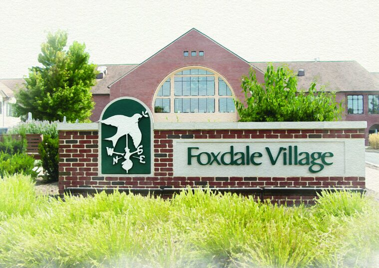

Founded by members of the State College Friends Meeting, Foxdale Village has embraced friendship, dignity, and respect for every individual for more than 35 years.
Foxdale Village began in 1985 as the dream of members of the State College Friends Meeting, modeled after Quaker-directed communities in southeastern Pennsylvania. Construction began in 1987 and was completed in 1990. Today the community is home to 148 cottage homes and a 57-apartment building, all connected to the Community Center.
Our organization’s values — community, acceptance, engagement, inclusion, caring, fulfillment, and stewardship — reflect that founding heritage.
We take a community-based, holistic approach to providing high quality services at a fair cost for the well-being of older people, and we are recognized as a leader in aging services known for vibrant, creative approaches to enhancing quality of life.
Residents don’t just live here — they help govern here, initiating their own activities, serving on Residents Association committees, and sitting on the Board of Trustees.

Chief Executive Officer
Nearly four decades in long-term care and health services. Previously COO of Presby Inspired Life; BSN from the University of Pittsburgh and a licensed Nursing Home Administrator.
Chief Financial Officer
Oversees all financial affairs, the Business Office, and Information Technology. Penn State M.B.A. with experience across long-term care, hospitals, clinics, and home health.
Director of Health Services
Leads our personal care and skilled nursing neighborhoods, therapy services, wellness program, and health office. Licensed Nursing Home and Personal Care Home Administrator.
Director of Human Resources
SPHR-certified HR professional with nonprofit, manufacturing, and healthcare experience spanning strategic planning, benefits, compliance, and employee relations.
Director of Residency Planning & Marketing
With Foxdale since 2016 and department director since 2020. A graduate of Leadership Centre County with a background in State College community banking.
Our board blends community leaders with current Foxdale residents — a reflection of the Quaker practice of shared governance. Many members belong to the State College Friends Meeting.
As a 501(c)(3) nonprofit, we make our key documents available to everyone.
The best introduction to Foxdale is a visit — tour the campus and talk with residents and staff.